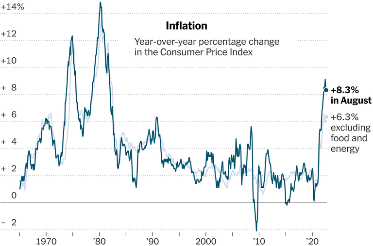

Overall inflation moderated less than anticipated, and a closely watched measure of price pressures jumped, bad news for the Federal Reserve.
Year-over-year percentage change in the Consumer Price IndexSource: Bureau of Labor StatisticsBy The New York Times
Price increases remained uncomfortably rapid in August as a
broad array of goods and services became more expensive even as
gas prices fell, evidence that the sustainable inflation slowdown the
Federal Reserve and White House have been hoping for remains
elusive.
Prices rose 8.3 percent from a year earlier, a fresh Consumer Price
Index report released on Tuesday showed. While slightly better
than July’s 8.5 percent, the rate was not as much of a moderation
as economists had expected as rent costs, restaurant meals and
medical care became more expensive. Compounding the bad news,
a core measure of inflation that strips out gas and food to get a
sense of underlying price trends accelerated more than forecast.
Stocks plummeted on Tuesday, with the S&P 500 falling 4.3 percent
— its biggest drop since the depths of the pandemic in 2020 — as
the data appeared to cement the case for another unusually large
interest rate increase of three-quarters of a percentage point at the
Fed’s meeting next week. That would be the third consecutive
move of that size and bring rates to a range of 3 to 3.25 percent.
Investors speculated that officials could even opt for a more drastic
adjustment of a full percentage point this month or extend their
campaign of swift rate moves for longer.
Fed officials have been raising interest rates since March to slow
the economy in a bid to tame America’s worst bout of inflation in
four decades, but the data suggested that their efforts were not yet
having much of an effect. Inflation’s relentlessness may force
central bankers to clamp down on the economy harder, potentially
pushing up unemployment more starkly, as they try to wrestle
prices back under control.
“Inflation momentum accelerated in all the wrong places,” said
Blerina Uruci, a U.S. economist at T. Rowe Price, explaining that
strong household balance sheets may be helping to sustain demand
even as interest rates rise and borrowing becomes expensive.
“In this environment, monetary policy has to do that much more to
cool down demand and have an effect on prices,” Ms. Uruci said.